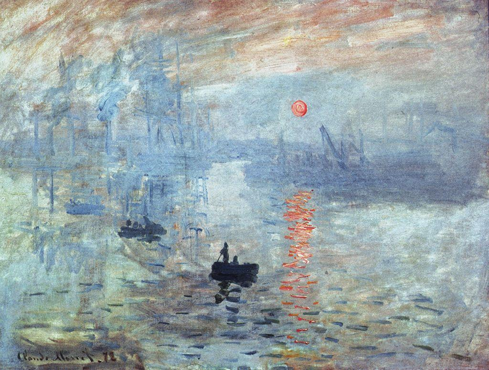
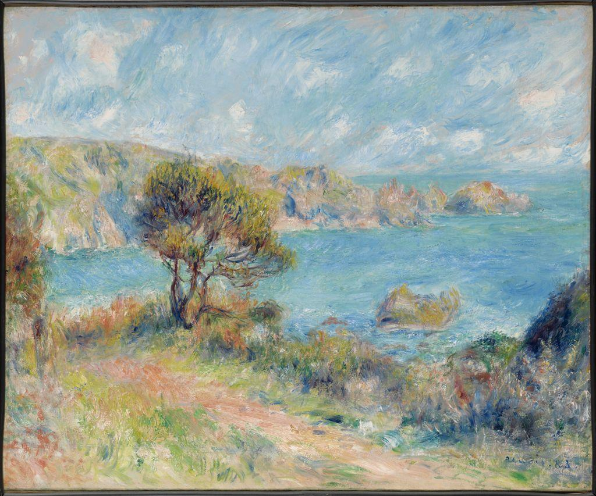
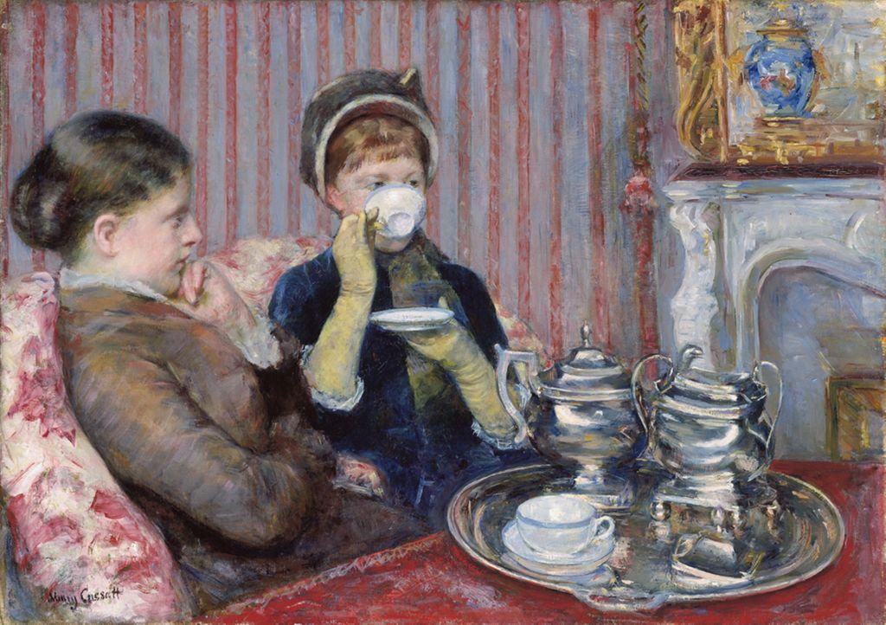

Impressionism was a movement of French painters working mainly in the 1870s and 1880s. Their goal was not to paint a scene the way the mind knows it should look, with every edge crisp and every detail filled in. It was to paint the immediate visual impression: what the eye actually catches in a single glance, at one moment, under one quality of light.
The movement even got its name by accident. When Monet showed the painting above at an independent exhibition in 1874, a critic mocked its loose, sketchy look and seized on the title, calling the whole group “Impressionists” as an insult. The artists kept the name, and the joke became a banner.
Three habits made the Impressionist look possible. First, they painted plein air, French for “open air,” setting up easels outdoors to study real light rather than reconstructing it from memory in a studio. Newly available paint in metal tubes made this practical. Second, they used quick, visible, broken brushwork: short separate strokes of color left unblended, so a wall of fog or a sleeve of a dress is a flurry of marks rather than a smooth surface. Third, they trusted optical color, placing small touches of bright, often unmixed color side by side and letting the viewer's eye blend them at a distance, which keeps the color looking alive.
Their subjects changed too. Instead of gods, kings, and history, the Impressionists painted ordinary modern life: a foggy harbor, a riverbank, a cafe, a woman pouring tea, sunlight through trees. The everyday became worth painting because the real subject was the light and the moment, not the importance of the scene.


Renoir studies an outdoor coast softened by haze; Mary Cassatt, an American who joined the group in Paris, catches a private modern moment of two women at tea. In both, the brushwork stays loose and the light, not the storyline, holds the picture together.
| Impressionism | A French movement of the 1870s and 1880s that painted the immediate visual impression of a scene under changing light. |
| Plein air | French for “open air”; painting outdoors in front of the real scene and its light. |
| Broken brushwork | Short, separate, visible strokes of unblended color rather than a smooth surface. |
| Optical color | Small touches of bright color placed side by side that the viewer’s eye blends at a distance. |
| The fleeting moment | A single passing instant of light or atmosphere that the painter tries to capture. |
The Impressionists made a quiet revolution. They said a painting could be about how a moment looks rather than what it means or whom it honors, and that ordinary life under real light was worth a serious artist’s attention. Once painters started trusting their own eye over the rules of the studio, the door was open. The next generation would walk straight through it.